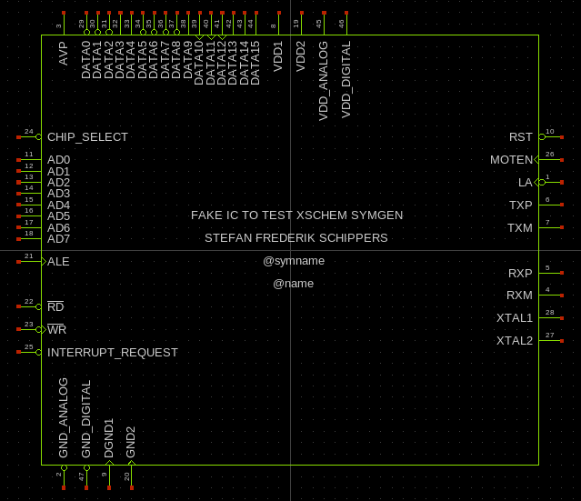

TUTORIAL: Use symgen.awk to create symbols from 'djboxsym' compatible text files
The symgen.awk utility (installed in (install_root)/share/xschem) generates xschem symbol files from a textual description that is backward compatible to DJ Delorie's perl djboxsym symbol generator for the geda schematic editor (gschem, lepton-schematic). A sample sample.symdef file is the following:
# This is a sample symbol definition for documenting djboxsym. Some # of the pins have been intentionally mistyped in order to demonstrate # all combinations of flags. DO NOT USE AS A CP2201 REFERENCE! [labels] SAMPLE refdes=U? DEMO ONLY ! copryright=2006 DJ Delorie ! author=DJ Delorie ! uselicense=unlimited ! distlicense=GPL ! device=sample device ! description=ethernet controller ! footprint=QFN-28 [left] 24 ! CS .bus 11 AD0 12 AD1 13 AD2 14 AD3 15 AD4 16 AD4 17 AD6 18 AD7 21 > ALE 22 ! RD/(DS) 23 !> WR/(R/!W) 25 ! INT 29 \_RESET\_ [right] 10 ! RST 26 > MOTEN 1 !> LA 6 TX+ 7 TX- 5 RX+ 4 RX- 28 XTAL1 27 XTAL2 [top] 3 AV+ 8 VDD1 30 !> \_CLK\_ 19 VDD2 [bottom] 2 AGND 9 DGND1 20 DGND2
Creating the symbol is simple:
<install_path>/share/xschem/symgen.awk sample.symdef > sample.sym
The resulting symbol is shown here under, side-compared with the same symbol generated by djboxsym for gschem:
Another sample2.symdef file specifically created to generate a perfectly valid xschem symbol (including attributes for spice netlisting) is the following:
# <pinnumber> <direction>[<circle><edge_trigger>] <name> # circle: ! # edge_trigger: > # direction is mandatory: i=input, o=output, b=bidirectional (inout) [labels] FAKE IC TO TEST XSCHEM SYMGEN STEFAN FREDERIK SCHIPPERS @symname @name ! type=subcircuit ! format="@name @pinlist @symname" ! template="name=x1" --vmode [left] 24 i! CHIP_SELECT .bus 11 i AD0 12 i AD1 13 i AD2 14 i AD3 15 i AD4 16 i AD5 17 i AD6 18 i AD7 21 i> ALE 22 i! \_RD\_ 23 i!> \_WR\_ 25 i! INTERRUPT_REQUEST [right] 10 i! RST 26 i> MOTEN 1 i!> LA 6 o TXP 7 o TXM 5 i RXP 4 i RXM 28 i XTAL1 27 i XTAL2 [top] 3 io AVP .bus 29 o! DATA0 30 o! DATA1 31 o! DATA2 32 o DATA3 33 o DATA4 34 o! DATA5 35 o! DATA6 36 o! DATA7 37 o! DATA8 38 o DATA9 39 o> DATA10 40 o> DATA11 41 o> DATA12 42 o DATA13 43 o DATA14 44 o DATA15 8 io VDD1 19 io VDD2 45 io VDD_ANALOG 46 io VDD_DIGITAL [bottom] 2 io! GND_ANALOG 47 io! GND_DIGITAL 9 io> DGND1 20 io> GND2
some extensions of xschem's symdef text file format with respect to original djboxsym format:
-
In addition to optional ! (inversion bubble) and > (edge trigger) specifiers
XSCHEM's symgen.awk accepts a pin direction specifier,
i, o, io and p (latter one for power pins, treated by xschem as inout)
for 'input', 'output', 'inout' (bidirectional) direction and 'power'. These attributes are fundamental
for digital simulations (Verilog, Vhdl). If this specifier is missing (as it is in djboxsym
.symdef files) then the direction is assumed as b (inout).
XSCHEM does not have any specific direction for power pins so they are treated as 'inout'
Port direction specifiers are indeed supported also by 'djboxsym' but not documented. - Option --vmode given before any pin declaration like in djboxsym sets vertical orientation for top / bottom pins.
- .bus specifier can be used for all pin orientations, left, top, right, bottom if --vmode is enabled, otherwise it will affect only spacing of left/right pins.
- Option --auto_pinnumber given before any pin declaration lets symgen.awk automatically add pin numbers, so the first field may be omitted
- Edge trigger (>) and inversion bubble (!) specifiers are drawn on all sides, not only left/right.
- Option --hide_pinnumber given before any pin declaration avoids pin numbers in generated symbol. If this option is used it is mostly done together with --auto_pinnumber to get rid of pin numbers completely.